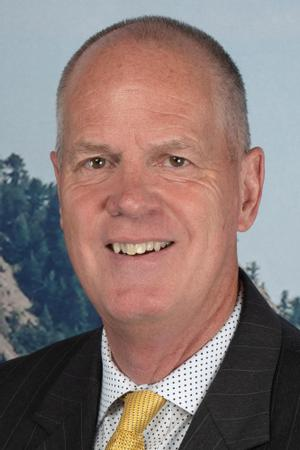

The Colorado Buffaloes men's basketball team represents the University of Colorado Boulder. The team competes in the Pac-12 Conference of NCAA Division I. They are currently coached by Tad Boyle. The Buffaloes have competed in fourteen NCAA Tournaments, making it to the Final Four in 1942 and 1955. Colorado has played in nine National Invitation Tournaments, winning the tournament in 1940 and making the semi-finals in 1991 and 2011.[2] The Buffs won the Pac-12 conference tournament in 2012, their first season as a member. Colorado is scheduled to rejoin the Big 12 Conference beginning in 2024.[3]
The Colorado Men's Basketball team was initially known as the Silver and Gold, and began play on January 10, 1901, and beat State Prep School 34–10.[4] While unaffiliated their first few seasons, the school joined the Rocky Mountain Conference in 1909. From 1902 to 1935, the school racked up a 200–151 record. In 1934, the Silver and Gold became known as the Buffaloes. CU students rented a buffalo calf to cheer the team on for the final football game that year, and the nickname stuck with the school since then.[5]
Tad Boyle was named the 18th coach in University of Colorado men's basketball history on April 19, 2010. In his first season in Boulder, Boyle led the Buffs to a school-record 18 home wins and their highest Big 12 finish (t-5th) since 2005–06. CU ranked first in the Big 12 and fifth nationally in free throw percentage (77.8) for the 2010–11 season. Boyle's efficient attack also ranked 12th nationally in scoring (79.6 ppg) and 19th nationally in field goal percentage (47.3).
Head Coach: Tad Boyle
Associate head coach: Mike Rohn
Assistant Coach: Bill Grier
Director of Basketball Operations: Bill Cartun
NO PLAYER POS HT WT CLASS HOMETOWN
5 Quincy Allen G 6-8 190 Fr Silver Spring, MD
31 Harrison Carrington G 6-7 195 Fr Menlo Park, CA
32 Nique Clifford G 6-6 191 Jr Colorado Springs, CO
3 Jalen Gabbidon G 6-5 195 Sr Harrisburg, PA
30 Greg Gerhardt F 6-10 215 Fr Superior, CO
13 J'Vonne Hadley G 6-6 215 Jr St. Paul, MN
1 Julian Hammond III G 6-3 181 Soph Denver, CO
24 Joe Hurlburt F 6-11 230 Fr Enderlin, ND
44 Ethan Johnson G 6-0 150 Fr Holyoke, CO
34 Lawson Lovering C 7-1 225 Soph Cheyenne, WY
41 Cody Mains F 6-8 215 Soph Fairfax, VA
0 Luke O'Brien G 6-8 213 Jr Littleton, CO
11 Javon Ruffin G 6-5 191 Fr New Orleans, LA
2 KJ Simpson G 6-2 177 Soph West hills, CA
23 Tristan da Silva F 6-9 217 Jr
The Buffs won their first conference tournament championship in 2012, their first year in the Pac-12 conference. Led by tournament MVP Carlon Brown, the 6th-seeded Buffs won four games in four days to bring the championship back to Boulder and earn an invitation to the 2012 NCAA tournament where they would go on to beat UNLV in the second round before losing to Baylor in the third round.
The Buffaloes have appeared in the NCAA Tournament 14 times, with a combined record of 11–17.
The CU Events Center is an 11,064-seat multi-purpose arena on the Boulder main campus of the University of Colorado. The arena opened in 1979, and is home to the Colorado Buffaloes men's and women's basketball teams and the CU volleyball team. The CEC opened in 1979 and the first game played there was the CU Men's Basketball team hosting the USSR basketball team. The largest crowd ever to witness a game was on December 5, 2012, when 11,708 people watched CU play CSU (CU won the game 70–61). The facility has also hosted its fair share of concerts as Bob Dylan, U2 and Stevie Wonder are some of the artists to have performed there.[30]
The student section for CU Basketball is referred to as the C-Unit. A grassroots organization that was started by a few students in 2004, the C-Unit has gone on to receive tons of praise for their ability to cheer the Buffs on.[34] They started getting attention nationally when the school sent 50 members to Los Angeles for the 2012 Pac-12 Tournament, and then upon getting a bid to the NCAA Tournament, the school sent 100 of them to The Pit in Albuquerque to cheer the team on in their victory over UNLV in the second round of the tournament.[35] The C-Unit, combined with the large number of CU fans who followed the team down for the weekend, turned The Pit into "Coors Event Center South".[36]
Website sourced from CU Buffaloes Men's Basketball Wikipedia